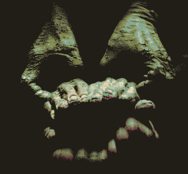
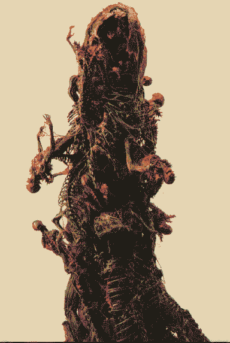

we’ve all blended together and forgotten who we were
CARRION is an egregore of all of the subconsciousnesses of Mars, living or otherwise. All the worst bits are eating themselves inside out, making it a pretty scary state to be in.
YOU WILL DREAM OF TEETH AND NOTHING ELSE.
frequencies flooded with whispering nightmares that are gnashing jaws on an oscilloscope. carrion feeders grapple to the top of the teleological food chain.
There’s no central heart to CARRION since Monolith is a network, but there are increasingly more eidola as you get closer to the storm, and dreams get more confused and restless in its proximity.
 
it found a shape so inexplicable that it now spends the rest of eternity emulating it, to no avail.